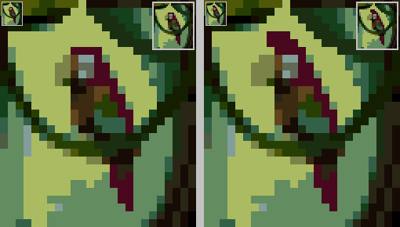
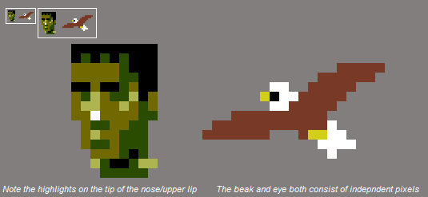
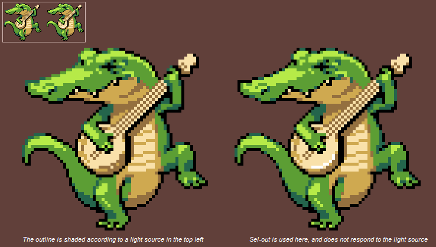

Задача:
Этот туториал призван объяснить чем является пиксель арт, чем не является пиксель арт, как начать создавать пиксель арт и как сделать ваш пиксель арт лучше. Это попытка консолидировать информацию, разбросанную по всем "нуботуториал" тредам и в других местах. За дополнительной информацией о том, что делает пиксель арт успешным, читателю рекомендуется обратиться к менее общим учебникам найденным в других местах, а также к Ramblethread!, найденном на Pixelation, который предлагает более углубленный анализ пиксельных кластеров, бандинга (banding) и сглаживания (anti-aliasing) и является источником большей части информации, содержащейся в этом руководстве.
Оглавление:
- Что такое пиксель арт?
- С чего начать?
- Необходимые термины
- Вещи, которых следует избегать
- Создание палитры
I. Что такое пиксель арт?
Судя по названию, мы можем предположить, что пиксель-арт - это любой рисунок, который состоит из пикселей. Но не каждое цифровое изображение пиксель-арт. Эта фотография состоит из пикселей, но это не пиксель-арт:
Хорошо, давайте без фотографий. Но если я сделаю свой рисунок на компьютере, то это пиксель-арт, да? Нет. Пиксель-арт - это очень специфическая подкатегория цифрового искусства. Не столь важно из чего это сделано, чем то, как это сделано. Для примера, эта цифровая живопись нарисована на компьютере и состоит из пикселей, но это не пиксель-арт:
Если пиксель-арт теряет ощущение важности пикселей которые составляют его, то я не думаю, что это можно назвать пиксель-артом. Это когда пиксели играют важную роль в природе работы которая определяет её как пиксель-арт. - Alex HW
Почему не все цифровые рисунки являются пиксель артом
Пиксель-арт находится отдельно от других цифровых форм искусства, его направленность на контроль и точность. Художник должен контролировать изображение на уровне отдельных пикселей и каждый пиксель должен быть размещён умышлено. Когда пиксель-арт создаётся целенаправленно, смещение всего нескольких пикселей может возыметь драматический эффект на изображении:

Особенности этого попугая резко меняются, но только несколько пикселей различны.
Другие цифровые формы искусства используют многие инструменты, которых Вы не найдете в пиксель-арте. Причина, по которой пиксель-художники не используют эти инструменты в том, что инструменты расставляют пиксели таким образом, что художник не может это предсказать. Это автоматические инструменты размытия, размазывания или смешивания пикселей. Любой инструмент, который размещает пиксели автоматически (что означает, что компьютер принимает решение о размещении пикселей, а не художник), как правило, неодобряется в пиксель-арте. Помните, что в пиксель-арте всё должно быть под контролем.
Автоматический инструмент использовался для размытия краёв этой серой кляксы
Вы часто будете слышать, как люди жалуются "Это не пиксель-арт, здесь слишком много цветов!" Это не потому что есть какое-то неписаное правило в пиксель-арте, которое говорит "Это пиксель-арт только если он содержит [x] цветов", вы можете использовать столько цветов, сколько хотите. Основной причиной того, что люди жалуются на количество цветов является то, что большое количество цветов может указывать на использование грязных инструментов. Грязные инструменты создают много новых цветов для того, чтобы достичь своих эффектов размытости, размазывая или прозрачности. Люди так же указывают на большое количество цветов, потому что более широкие палитры сложнее контролировать, но мы вернёмся к этому позже.
Почему дело не только в инструментах
Так что, если я не использую никаких эффектов размытия, или фильтров, или умных инструментов, это пиксель-арт, верно? Все, что сделано в MS Paint будет пиксель-артом? Нет. Не программа определяет, является ли или нет это пиксель-артом, а то, как это сделано. Например, это изображение было сделано в MS Paint, без каких-либо умных инструментов:
Но это не пиксель-арт. Это то, что мы называем oekaki. Если вы можете создать изображение без масштабирования, скорее всего, это не пиксель-арт. Если вы используете инструмент линия и заливка большую часть времени, вы не обращаете внимание на отдельные пиксели, только на линии и формы, созданые пикселями. То же самое касается грубых эскизов, сделанных инструментами карандаш или кисть. Эти методы игнорируют важность тщательного, преднамеренного размещения отдельных пикселей.
While the most common misconceptions about pixel art are due to too loose of an interpretation of the medium, there are some who have too strict a definition of what makes pixel art.
Буквально КАЖДЫЙ пиксель НЕ должен быть размещён вручную. Работа пиксельного художника состоит не в размещении вручную каждого пикселя. Вы не должны вести себя как робот, заполняя большие площади тысячами одиночных щелчков инструмента карандаш. Использовать заливку нормально. Использовать линию нормально. Важно то, что у художника есть контроль изображения на уровне единичного пикселя, а не то, что вы вы создаёте изображение по пикселю за раз.
II. С чего начать?
Pixel art is about the pixels- that's as simple as it gets. Эти советы имеют общую цель: убедиться, что вы сфокусированы на пикселях.
Начните с малого- Чем больше изображение, которое вы пытаетесь сделать, тем больше времени и труда понадобится, чтобы завершить его. Не делайте это обузой для себя, используйте маленькие холсты. Пиксель-арт может передать много информации при своём размере, вы будете удивлены, как мало места вам нужно, если вы контролируете пиксели должным образом.
Советы
Используйте ограниченную палитру- Если вы не можете сделать хороший спрайт в 4 цветах, использование 40 цветов не поможет. Использование небольшой палитры особенно хорошо для новичков, потому что это заставляет фокусироваться на размещении пикселей и отношениях пикселей в группах. Оригинальная, 4-х цветная палитра GameBoy - хороший выбор для новичков, так как вы будете волноваться только о значении, а не оттенке или насыщенности.
Программы
Есть много хороших программ для пиксель арта, многие из которых бесплатные. Я использую grafx2, хотя GraphicsGale, Pro Motion, Photoshop, Pixen и MS Paint тоже популярны. Некоторые более дружественные, чем другие, почему я и выбираю что-то с горячими клавишами, такое как Grafx2 чем MS Paint, это спасло меня от множества хождений по панели инструментов (и сделало гораздо проще управление палитрой).
Типы файлов
Распространённая ошибка состоит в том, что новые пиксель-художники сохраняют свои рисунки в JPEG/JPG. В то время как этот тип файла может быть хорош для других типов изображений, он вызывает сжатие, которое ухудшает качество участков в пиксель-арте.
Никогда, НИКОГДА не сохраняйте в JPG. Вместо этого, сохраняйте в PNG или GIF. Будьте осторожны, так как некоторые программы (например, MS Paint) не поддерживают должным образом формат GIF, и портят ваши изображения. В этих случаях вам понадобится конвертер файлов (например, Giffy), если вы хотите сохранить изображение как GIF.
Но как мне начать изображение?
Это полностью зависит от вас. Некоторые художники предпочитают делать в начале линейные зарисовки, а затем начинают добавлять цвета:
Другой художник предпочитает 'набрасывать' основные формы большой кистью, затем продолжая 'уточнять' изображение, пока оно не достигнет уровня детализации пикселей:
Оба метода хороши, всё зависит от того, с каким вам удобно или от специфики проекта. Лайн арт может быть хорошим методом, если вы обрисовываете отсканированное изображение (как на примере с морским монстром выше). Если вы начали изображение в вашей пиксель-арт программе и это не маленький спрайт, группирование в формы кистью бОльшего размера может оказаться полезнее.
III. Необходимые термины
Сглаживание (Anti-aliasing (AA))
[В дополнение к информации, приведенной в этом разделе, просмотрите это изображение от Ptoing. (приведено ниже, прим. пер.)]
Сглаживание - это способ сделать ломаные края мягче. Вы можете уже быть знакомы со сглаживанием, потому что много программ и инструментов делают это автоматически. Однако, когда мы говорим о пиксель-арте, сглаживание означает ручное сглаживание. Ручное AA означает сглаживание ломаных участков ручной постановкой пикселей разного цвета для облегчения перехода. Вот пример:
без AA с добавлением AA
Есть несколько ошибок, часто встречающихся при применении сглаживания, которые обсуждаются в разделе "Вещи, которых следует избегать".
Смешивание (Dithering)
Смешивание состоит из различных пиксельных шаблонов. Обычно это используется, чтобы размыть переход между двумя цветами без добавления каких-либо новых цветов в палитру. Это также используется для создания текстуры. Во времена ЭЛТ-мониторов дизеринг был особенно полезен, так как экран размывал участок дизеринга и скрывал шаблон. Теперь, когда чёткие ЖК-мониторы давно вошли в нашу жизнь, шаблоны уже не так легко спрятать, что делает дизеринг не таким универсальным, как это было раньше. Тем не менее, дизеринг используется до сих пор.
Наиболее распространенной формой дизеринга, которую вы увидите, будет смешивание 50/50, также известное как 50% дизеринг или шахматный шаблон.
Как показано на примере выше, вы можете создавать различные шаблоны для дальнейшего сглаживания между полным цветом и 50% шаблоном дизеринга. Эти шаблоны зачастую легче заметить, чем 50% дизеринг, так что будьте осторожны!
Стилизованный дизеринг - это другая техника и она характеризуется добавлением мелких форм в шаблон.
Чередующийся дизеринг позволяет двум дизеринг-регионам объединяться вместе. Он называется чередующимся дизерингом, потому что две смеси размываются вместе на границах (чё? прим. пер.). Этот тип дизеринга позволяет вам смешивать два дизеринга вместе, чтобы сформировать градиенты.
Рандомизированный дизеринг - это менее распространённая форма дизеринга, и в общем случае не рекомендуется, так как она добавляет много однопиксельного шума к изображению. В то время как он имеет некоторое применение в очень малых дозах, случайный дизеринг это то, чего вы будете часто стараться избегать.
Простота использования, какой обладает дизеринг, это то, чем часто злоупотребляют неопытные художники. Плохой дизеринг подробно рассматривается в разделе Вещи, которых следует избегать.
Пиксельные кластеры (Pixel clusters)
The cluster of pixels is made from single pixels. However, a single pixel is most of the time near-useless and meaningless if not touching pixels of the same color. The pixel artist is concerned with the shapes that occur when pixels of similar color touch each other and convey an opaque, flat, shape. Most of the defeats and possible triumphs of pixel art occur in that exact moment where the artist makes a cluster of pixels. -Ramblethread
I stress the importance of placing individual pixels, but these are rarely independent pixels. A single pixel, isolated, is a speck on a screen- it’s noise. But pixels aren’t usually found alone, instead they exist as part of pixel clusters- groups of pixels of the same color that together produce a solid color field. While the single pixel is our basic building block and smallest unit, the pixel cluster is the unit on which much of our decisions about pixel-placement will be based. And while it’s important to realize individual pixels aren’t independent, it’s just as important to realize pixel clusters aren’t independent. Like puzzle pieces, the borders of a pixel cluster determine the shape of the pixel clusters it borders.
Here is an example of how rearranging the shape of a pixel cluster can have dramatic effects on its neighbor clusters:
While lone pixels often read as noise, a lone pixel of a color different than the field it touches, if used as a buffer (AA), reads as part of that cluster, and is thus unproblematic:
IV. Вещи, которых следует избегать
Плохой AA
Слишком много AA (over-anti-aliasing) - Вы должны использовать столько AA сколько необходимо чтобы сгладить края. Если его использовать слишком много, края могут выглядеть размытыми, и изображение потеряет четкость линий.
Слишком мало AA - Здесь художник использовал одиночные пиксели, чтобы размыть переход, но он только немного смягчил неровный край. Он мог бы сделать гораздо более плавный переход, используя больше пикселей, чтобы показать более мягкий переход:
AA banding - When segments of AA line up with the lines they're buffering, происходит АА бандинг. Для лучшего понимания АА бандинга, обязательно прочитайте раздел бандинг.
Изломы
Изломы происходят, когда пиксель или группа пикселей не на своём месте, нарушая плавность линии. Изломы также могут появиться, когда линии не хватает сглаживания. Jaggies get their name from the jagged lines that they create. В более широком смысле, изломы являются результатом какой-либо плохой техники пиксель-арта, но обычно они обсуждаются как часть работы с линиями. В этом контексте они будут обсуждаться здесь.
Как исправить изломы:
изменить длину линий
Часто проблема заключается только в том , что отрезок линии слишком короткий или слишком длинный, и это создает "прыжок". Using a more uniform length of pixels, чтобы сгладить переход является решением в нашем случае.
Anti-aliasing
Если ваша линия не идеально горизонтальная, вертикальная или под углом 45 градусов, то, естественно, появятся изломы.
Это происходит потому, что пиксели квадратные и мы ограничены сеткой, поэтому наклонные и кривые линии трудно изобразить. AA является правильным средством в подобных ситуациях.
Плохое смешивание (Bad dithering)
Существует несколько распространенных ошибок при смешивании. Самая частая ошибка - слишком много смешивания. Если смешивание происходит на половине спрайта, то возможно лучше добавить новый цвет в палитру. Дизэринг в идеале должеин быть использован для taper концов и краев непрозрачной области. Когда используется слишком много дизеринга, зона смешивания сама превращается в область:
На этом спрайте дизеринг не служит буфером между цветами, но создает ненужную текстуру. Создание текстуры может быть полезным аспектом размытия, но только при правильном исользовании. Если вы попробуете to buffer and are instead adding texture, смешивание работать не будет.
Так сколько дизеринга вы должны использовать? Это зависит от того насколько велика ваша палитра - если точнее, контраст между цветами которые вы хотите смешать. Чем меньше контраст между цветами,(по hue или по значению), тем менее жестким будет смешивание:
Banding
Banding, most simply, is when pixels line up. When neighbor pixels end at the same x or y coordinate on the underlying grid, the grid immediately becomes more evident, the pixels are exposed, and the apparent resolution becomes less fine.
Here are several instances of banding, all of which occur because the pixels have lined up. These names aren't common lingo, but will work for the purposes of this tutorial:
Hugging
Here an opaque field of color has been outlined by a row of pixels. It's fine to use outlines, but make sure the outline and the shape it contains don't line up and reveal the grid.
Fat pixels
Fat pixels can occur alone in small squares, together as fat lines, or multiplied as large bands (staircase banding).
Skip-one banding
Even if there is a negative space between two bands, the mind will fill in the gap and banding will remain.
45 degree banding
Though the rows of pixels lining up are only 1 pixel thick, banding is still present.
Pillow-shading
Shading by surrounding a central area with increasingly darker bands. Pillow-shading is bad because it pays no attention to the light source, and conforms to the shape of the area rather than the form it represents of how light affects it. Pillow shading is often, but not always, combined with banding. The way to fix pillow-shading is simply to pay attention to the direction light is coming from:
The reason pillow-shading is wrong is not because the light source is frontal (from the viewer's direction). You don't have to place the light source in the corner. The reason pillow-shading is incorrect is because it follows flat shapes rather than focuses on how the three-dimensional forms are lit.
So, it is possible to use a frontal light source, so long as you pay attention to the forms:

Noise
Much of the time, independent pixels (pixels that do not belong to a pixel cluster) are unable to convey sufficient information by themselves, and their inclusion usually only creates noise. Noise is any sort of information that does not contribute to the piece and serves only to interrupt the area it inhabits and distract the viewer. In pixel art, noise is often composed of independent pixels. For the purposes of this tutorial, single-pixel noise will be what I’m referring to when I use the term “noise”. The reason one must be careful when using a 25% dither (or any dithering, really) is because of the noise all the independent pixels create.
Single pixels expose the underlying grid by revealing the resolution of the image. Remember, in the wild, pixels travel in packs. It’s the nature of a pixel to long for a place in a pixel cluster. For this reason, independent pixels should only be used for very specific and purposeful reasons.
Justifiable instances of independent pixels include:
Use as specular highlights
Independent details call a lot of attention to themselves, but sometimes this is precisely what you want. For bright specular highlights, single pixels will often work just fine. For an example, see the white pixel used on the monster's nose below.
Portraying small but essential details

Usually this will only matter for details on very small images, like the eyes on a small sprite, or the beak of a tiny bird. Or stars, or little bubbles.

Sel-out (broken outlines)
Sel-out (short for selective outlining, also known as broken outlines) is anti-aliasing an outline to a background color. This means sel-out is really a type of bad AA, but the term has become popular enough to warrant its own section.
The idea is usually to darken the outline at the contours to approach a darker color, so that the sprite will read well on any background, instead of melting into a similarly-colored background. Sel-out is not shading an outline according to a light source. A full outline with light variation won’t create jaggies as badly as a broken outline will:

Perhaps this is a simpler example. The half-circle on the left is shaded according to a light source (again, coming from the top left corner). The top of the half-circle on the right has sel-out applied:
Sel-out works if it is created for specific scenarios, such as in a game where you know the background will be consistently dark.
V. Creating a palette
When should I worry about colors?
Well essentially what it comes down to is, what colors does the piece need to have? then, as I go, how far can I get with those (until of course I need to add more shades). That's when the mixing occurs.
-Adarias
This is a common method of creating a palette for a piece. Here's an example of what he's talking about:
As the piece gets more complex, it becomes necessary to create additional colors to achieve more advanced shading, or to color new image elements or details.
Another method is to create the piece in shades of grey, then add color later. This is possible because relative value is a greater concern than hue, because hue can be more easily altered later on, after value relationships have been established.
Personally I find it easier to keep up with colors as the piece progresses, so I prefer the first method.
Color count
You may find that pixel artists often advocate a low color count. You might assume that this is just a tradition leftover from the olden days of pixel art, back when video game consoles could only display a certain amount of colors.
If modern computers can easily display hundreds of colors, why shouldn't you use them all? In truth, using small palettes isn't an outdated tradition of pixel art, and there are very logical reasons behind this practice.
Cohesion- When you're using less colors, the same colors will reappear throughout the piece more frequently. Since the different areas of the work share the same colors, the palette ties the piece together, unifying the work.
Control- The smaller the palette, the easier it is to manage. You may, and probably will, want to change adjust a color later on. If you've got 200 colors, it's going to take you a lot longer to make the adjustments, because by changing one color you've thrown off its relationship with the colors neighboring it on its color ramps, and adjusting them means changing the relationships between those colors and their neighbors! You can see how this quickly adds up to a lot of work. With a smaller palette, the effect of changing a single color is more substantial, and there are less micro-relationships to worry about.
Hue, Saturation, and Luminescence
Hue
Hue refers to the identity of a color. Whether a color is defined as blue, red, orange, etc. depends on its hue:

In the above picture, hue is represented along the x-axis.
Just as you can change how bright or dark a color appears by surrounding it with lighter or darker pixels, the perceived hue of a color depends on its environment. Here we have a completely neutral, medium grey:
In this picture (a detail of this piece by iLKke) the green in the trees is actually not green at all, but the same grey as the previous picture:
Because the background is so purple (which is the opposite of green on the color wheel), the grey looks greener than it actually is.
Hue will be an important concept later when we discuss hue shifting.
Saturation
Saturation is the intensity of a color. The lower the saturation of a color, the closer the color gets to grey:
The most common problem new artists encounter is regards to saturation is using colors with too high of a saturation. When this happens, the colors start to burn the eyes. This can be a problem in any media, but because the colors in pixel art are made up of light, instead of pigment as in paint, the potential for colors being too bright or irritating is much higher. Notice how the colors in the second image are much easier on the eyes:
Luminescence (brightness)
Luminescence (also known as brightness or value) is how dark or light a color is. The higher the luminescence, the closer the color gets to white. If the luminescence is 0, then the color is black.
Here's a palette arranged as a luminescence scale for you visual learners:
low luminescence (darker colors) on the left, high luminescence (brighter colors) on the right
In a given palette, you'll want to have a wide range of values. If you only have colors in the same range of luminescence, then you won't be able to create good contrast- a full range of values allows you to use highlights, mid-tones, and shadows. The difference between the brightness of two colors is known as contrast. A common problem newer artists exhibit is not having enough contrast. Here's an example of an image for which the contrast is too low:
And that same image, adjusted so the values are spread out more evenly from light to dark:
The value of a color is a set number, but colors can appear lighter or darker depending on their background. For this reason, you won't always want to use your brightest color for every highlight. A color that makes a good highlight on one object might be too bright to use on a darker object.
Luminescence is especially relevant to pixel art: The brightness of a pixel or line determines how thick it appears:
The first example is a simple black line. The width of the line looks consistent. Below that is a line with pixels that vary in brightness. Notice how the line appears thinner toward the center at 1x.
Color Ramps
A color ramp is a group of colors that can be used together, arranged according to luminosity. A palette can consist of a single ramp of many different ramps.
Here's a palette:
And here's that same palette, arranged according to its color ramps (of which there are two):
It isn’t necessary that you actually create a model like the one above (though some artists find it useful). What is important is that you understand what your color relationships are- that is, what your ramps are.
It isn't necessary that a color be restricted to a single ramp. Often, ramps will share colors. Frequently, the darkest or lightest color will belong to most or all of the palette's ramps, as in the example above, in which both ramps share the same darkest and lightest shades.
It’s also possible for mid-tones to work in multiple ramps. In these cases, the versatile color takes the place of two or more separate colors, aiding in palette conservation. In the case of multi-ramp shadows and highlights, the extremes in luminescence allow the color to be flexible (because they approach black or white). Since mid-tones are not afforded this advantage, they are often more neutral colors, meaning they are closer to brown or grey.
Here is a palette that uses one shade of grey to bridge the gaps in several ramps:
You also have to be careful about having colors in a ramp that don't fit. If a color doesn't belong in the ramp, then it has the potential of punching through the image, which is a priority issue in which the color, rather than work as part of the image, seems separate from it, and looks almost like it is sitting on top of the image. This is usually due to the saturation being too high, or because the hue clashes with the neighboring hues, and thus creates eyeburn.
The above image shows eyeburn created by a color with too much saturation.
...and in this image, eyeburn is created by the green clashing with the purple. The hue should logically follow its neighbors in the ramp.
Hue shifting
Hue-shifting refers to having a transition of hues in a color ramp. A color ramp without hue-shifting is known as a straight ramp. In straight ramps, only the luminescence changes, while in hue-shifted ramps both hue and luminescence will (usually) change.
The first color ramp is a straight green ramp. The second image is a green ramp with hue-shifting applied. When using hue shifting, bend your highlights toward a certain color (yellow, in the example above), and move the darker colors toward a second color (I chose blue in the above example). Hue-shifting is used because straight ramps are usually boring and don't reflect the variety of hues we see in reality, and hue shifting can add subtle color contrast within a ramp.
Addition from jalonso
By DB:
Selective AA is the process of pushing/moving the internal AA into the outline...without ever making the (easy) mistake of doing external AA. "Internal thinning".
If you want strictly pixelart (and no semitransparancy) and have sprites that should look decent on all backgrounds; then "selective AA" is the best method (I don't know if there's an accepted term for it, however it has a close relationship with Selout). Although it's a very advanced pixelart technique, and may not be suitable for beginners..so try working with just internal-AA if you wanna play it safe.
Link to waybackmacine's backup of the original SEL-OUT tutorial
https://web.archive.org/web/20130602163317/http://pixel-zone.rpgdx.net/shtml/tut-selout.shtml